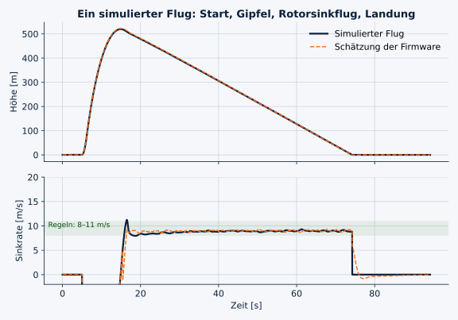
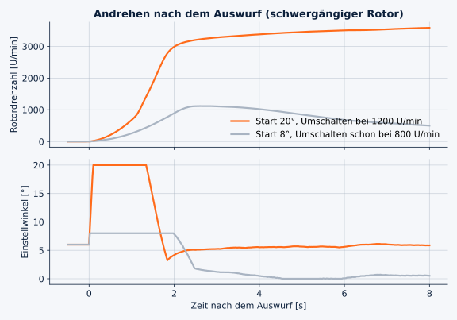
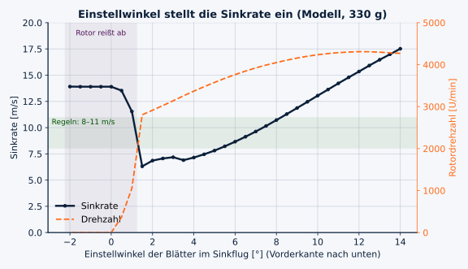
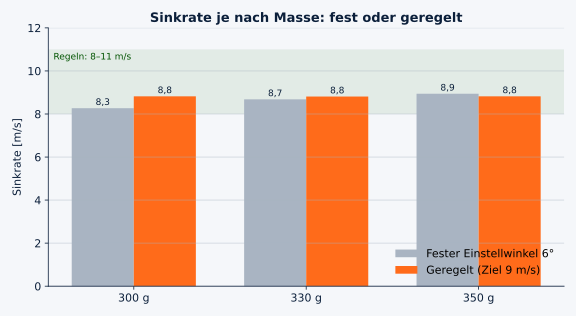
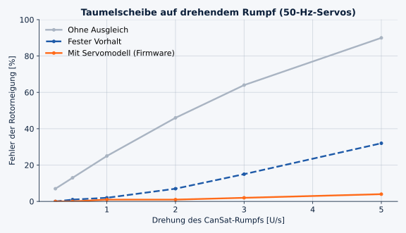

Test & Flug
Was wir messen, teilen wir.
Hier dokumentieren wir Vorversuche und ergänzen nach dem Start die Messdaten unseres CanSat. Die Werte unten stammen noch aus einem Rotor-Vorversuch und aus Simulationen, nicht aus einem Flug.
Aktueller Stand
Rotor-Vorversuch am Autofenster
Ein früher Versuch mit einem 96,9-g-Testmodell und 8° Rotorblattwinkel. Die Fahrgeschwindigkeit diente als Anströmung.
| Lauf | Fahrgeschwindigkeit | Gemessene Kraft | Winkel zur Horizontalen |
|---|---|---|---|
| 1 | 48 km/h | 2,3 N | 50° |
| 2 | 70 km/h | 3,5 N | 30° |
| 3 | 70 km/h | 3,5 N | 30° |
Simulation
Wir fliegen am Computer, bevor wir fliegen.
Unsere Flugsoftware läuft unverändert in einer Simulation am PC. Ein Rotormodell antwortet auf jeden Einstellwinkel der Blätter mit Drehzahl und Sinkrate. So testen wir in Sekunden Hunderte Flüge, auch mit kaputten Sensoren.

Ein ganzer Flug
Start, Gipfel in ca. 520 m, Rotorsinkflug, Landung. Die Firmware schätzt Höhe und Sinkrate auf etwa einen Meter genau.

Rotor andrehen
Aus dem Stand läuft der Rotor nur an, wenn die Blätter mit der Vorderkante nach unten stehen. Mit 20° dreht er in zwei Sekunden auf.

Einstellwinkel als Bremse
Zwischen 2° und 8° stellt der Einstellwinkel die Sinkrate ein. Darunter reißt die Strömung ab, und der CanSat fällt.

Geregelt statt fest
Die Firmware stellt den Einstellwinkel laufend nach und hält 8,8 m/s, egal ob der CanSat 300 oder 350 g wiegt.

Drehender Rumpf
Die Lagerreibung dreht den Rumpf mit. Die Firmware rechnet die Drehung aus der Steuerung heraus, der Fehler bleibt unter 5 %.
Was passiert, wenn ein Sensor ausfällt?
| Fehler | Vorher | Jetzt |
|---|---|---|
| Luftdrucksensor friert ein | Firmware glaubt, sie sinkt nicht, fällt mit 13,4 m/s | erkannt, sicherer Blattwinkel, 8,7 m/s |
| Lagesensor fällt 2 s aus | Höhe springt um 21 m | kein Sprung |
| Beschleunigungssensor verschoben | hält 10,1 statt 9 m/s | korrigiert, 8,9 m/s |
| Drehzahlsensor tot | – | Umschalten nach Zeit, Flug normal |
Nach dem Start
Die Flugauswertung kommt hier dazu.
Wir ergänzen Telemetrie, Temperatur- und Druckverlauf, Flugphasen sowie Erkenntnisse aus der Landung, sobald die Messdaten vorliegen.
Mehr über unsere MissionCanSat Austria
Team SWASH entwickelt das Projekt im Rahmen des österreichischen CanSat-Wettbewerbs von ESERO Austria.